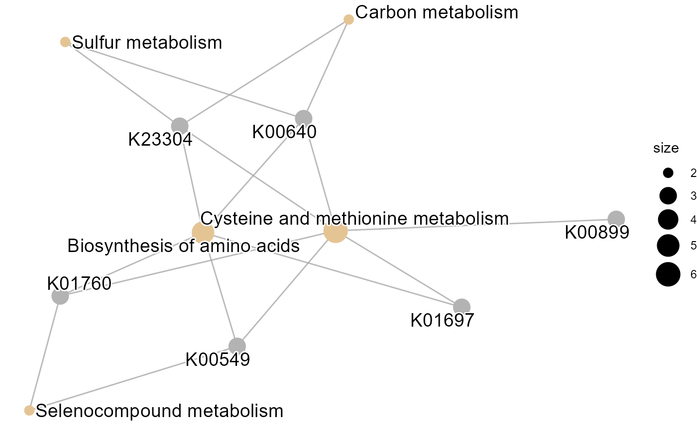

Pathview text function
Noriaki Sato
pathview_text.RmdKEGG mapping plots produced by pathview can be populated with text information (Luo and Brouwer. 2013).
Suppose an example for KEGG Orthology obtained from some microbiome-related experiments. By using MicrobiomeProfiler, enriched pathway using over-representation analysis can be obtained as follows.
kos <- c("K00640","K23304","K01760","K01697","K00549","K00899")
enriched <- MicrobiomeProfiler::enrichKO(kos)
clusterProfiler::cnetplot(enriched) Now plot these KOs in the pathview.
## As the output is PNG, this script is omitted.
pvInput <- rep(1,length(kos))
names(pvInput) <- kos
# pathview(kos, pathway.id = "00270", species = "ko")
raw pathview plot
To use the pathviewText() one should specify which
database to retrieve the text, "refseq" or
"abstract". The default is “abstract”, which fetches
information from RefSeq database. In this case, KO number is not
included in RefSeq, thus the abstract is chosen. However, querying in KO
number itself is not useful. We conver the KO number to EC number using
KEGG REST API, and fetches the description using wcEC()
function, and query the enzyme name in PubMed. In this way, one must
provide searchTerm, and termMap, which map the
KO and EC. Also, node.types="ortholog" must be passed to
pathview.
## Again, the codes are commented out.
# ecko <- data.table::fread("https://rest.kegg.jp/link/ko/ec",
# header=FALSE)
# ecko$EC <- sapply(strsplit(ecko$V1, ":"),"[",2)
# ecko$KO <- sapply(strsplit(ecko$V2, ":"), "[", 2)
# filt <- ecko[ ecko$KO %in% kos, ]
# ecnum <- filt$EC
# termMap <- filt[,c("KO","EC")] |> `colnames<-`(c("query","number"))
# ecQuery <- wcEC("enzyme.dat", ecnum = ecnum, onlyTerm =TRUE)
# ecMap <- wcEC("enzyme.dat", ecnum = ecnum, onlyDf =TRUE)
# termMap <- merge(termMap, ecMap[,c("number","desc")], by="number") |>
# `colnames<-`(c("number","query","description"))
## Main function
# pathviewText(kos, keyType = "KO",
# target="abstract",
# pid = "00270",
# org = "ko",
# searchTerms = ecQuery,
# termMap = termMap,
# node.types="ortholog")
## We can transpose the barplot by trans=TRUE
# pathviewText(kos, keyType = "KO",
# target="abstract",
# pid = "00270",
# org = "ko",
# searchTerms = ecQuery,
# termMap = termMap,
# node.types="ortholog")The below picture shows transposed results.

annotated pathview plot - KO
For gene queries, we can obtain the same plot using relatively simple query.
query <- c("TP53","CDC45","CDC6")